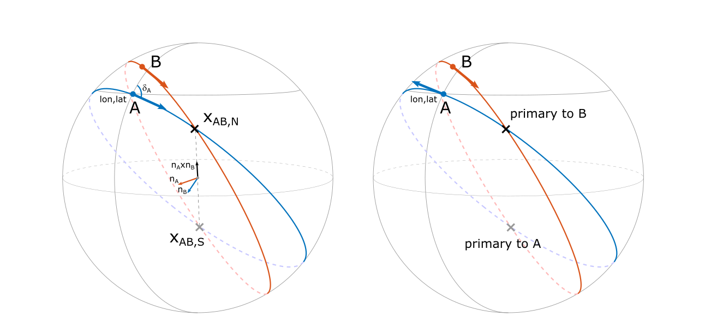
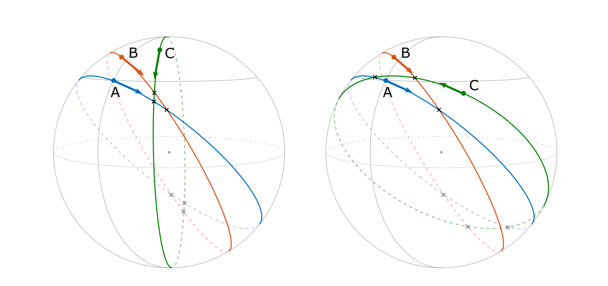
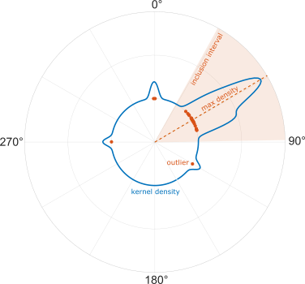
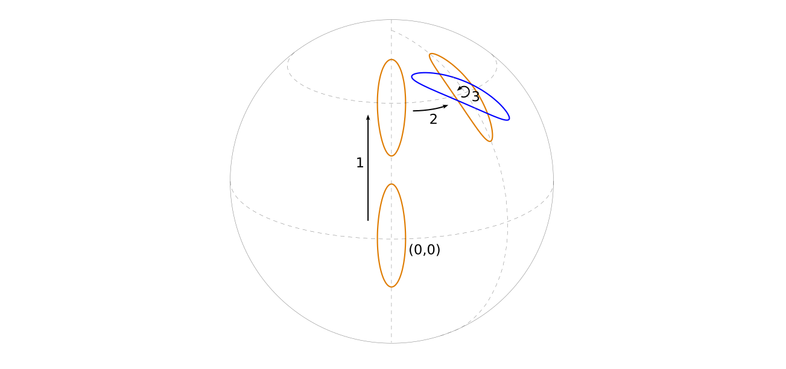

Geofix is a utility software for estimating the location (here called a “fix”) of signal source with a radially symmetric transmission pattern on the earths surface. This is done by measuring the direction of the signal at two or more geographical locations.
In the following we consider a perfectly spherical earth. A direction is here defined by a bearing with a value between 0° and 360° (north is 0° and south 180°) at some location on the sphere given by the longitude and latitude coordinates \((lon,lat)\). As can be seen in the figure a given direction corresponds to a great circle, and also to a plane that goes through the center of the earth. The term direction and bearing will be used interchangeably.
The great circles from two directions will cross each other in two points, one on the north hemisphere and one on the south. The location of the crosses can be calculated by taking the cross product between the normal vectors of the planes defined by the great circles since it points in the direction of the line that is defined by the planes intersection.
We will call the first cross that one will pass when following the great circle in the direction of the bearing the primary cross and the other the secondary. Two directions A and B will either share their primary cross or not. Or differently formulated, a cross will either be primary to both A and B or it will be primary to only one of A or B.

figure 1 (left): Bearings and crosses. The cross on the northern hemisphere is primary to both A and B. (right): A and B have different primary crosses.
With a third bearing C there will be 6 crosses. If a bearing shares the primary cross with at least one of the other two bearings it will be included in the fix estimation described below. If on the other hand both of the two other bearings have a different primary cross, the bearing is excluded.

figure 2 (left): A, B and C all share each others primary crosses. (right): C shares primary cross with B but not with A.
Consider \(n\) direction measurements with errors \(\delta_1\pm\epsilon_i, ...,\delta_n\pm\epsilon_n\) from the same location. Analysis is made in order to exclude outliers and to calculate the average direction and the standard error.
Outliers are identified using a kernel density method with a circularly wrapped gaussian kernel with a default bandwidth of 4° (this can be configured). Directions outside a symmetric interval of 60° (also configurable) surrounding the direction of maximum kernel density are excluded from the analysis.

The circular mean direction \(d\) is calculated using vector addition of the included bearings \[ d=atan2(\sum_{i=1}^{n}\omega_icos(\delta_i), \sum_{i=1}^{n}\omega_isin(\delta_i)) \] where the weights \(\omega_i\) typically are \(1/\epsilon_i\) but can also be configured to all be equal to 1.
The circular standard deviation \(\sigma\) is calculated as \(\sqrt{-2\ln(R)}\) where \[ R=\frac{1}{\sum{\omega_i}}\sqrt{\left( \sum_{i=1}^{n}\omega_icos(\delta_i) \right)^2 + \left( \sum_{i=1}^{n}\omega_isin(\delta_i) \right)^2 } \] When all directions are exactly the same \(R=1\) and \(\sigma=0\). A non-zero dispersion in the direction measurements will give \(0 \le R<1\), and \(\sigma\) will approach infinity when all directions tend to cancel each other out when added.
The estimate of the most likely location of a source is in this case a school example of a multivariate gaussian maximum likelihood estimation. There are tons of literature describing it in detail. Here follows a short explanation of the algorithm used in this code.
The following model is used. With \(m\) normally distributed direction measurements from locations \((lon_i,lat_i)\) of a single source located at coordinates \((\phi,\theta)\), each direction is given by.
\[ d_i = f_i(\phi,\theta) + n_i \qquad i=1,2, ..., m \]
where \(d_i\) is the i’th measurement, \(n_i\) is an offset due to measurement errors and \(f_i(\phi,\theta)\) is the function that gives the direction depending on the source position \(\phi\) and \(\theta\). Note that the function looks different depending on the location of the direction measurement. The index \(i\) on \(f\) indicates that it implicitly depends also on \((lon_i,lat_i)\). In this code a C++ library called GeographicLib provides this function. In vector notation this becomes.
\[ \textbf{d} = \textbf{f}(\phi,\theta) + \textbf{n} \]
We further assume that the offsets (the residuals if you like) \(n_i=d_i-f_i(\phi,\theta)\) are normally distributed with \(\mathcal{N}(0,\sigma_i^2)\), with \(\sigma_i\)’s estimated according to the calculation above.
In a multivariate context the \(m\) offsets are the components of a single random vector \(\textbf{n}\) from the multivariate normal distribution \(\mathcal{N}_m(\textbf{0},\boldsymbol{\Sigma})\) where \(\boldsymbol{\Sigma}\) is the covariance matrix with diagonal elements \(\sigma_i^2\). We will assume that all direction measurements are independent so that all non-diagonal elements are zero. Similarly the random vector \(\textbf{d}\) is to be viewed as a single observation of \(m\) data points.
In this gaussian model, given the observation of directions \(\textbf{d}\), the likelihood function for the source location \((\phi,\theta)\) is then described by the multivariate normal distribution
\[ \mathcal{L}(\phi,\theta|\textbf{d}) = \frac{1}{\sqrt{(2\pi)^{m}|\boldsymbol{\Sigma}|}}\exp{\frac{-[\textbf{d}-\textbf{f}(\phi,\theta)]^{T}\boldsymbol{\Sigma}^{-1}[\textbf{d}-\textbf{f}(\phi,\theta)]}{2}} \]
The task at hand is to find estimates \((\hat{\phi},\hat{\theta})\) that maximizes this likelihood. A bit of algebra yields that this translates to minimizing the function
\[ \textbf{N}(\phi,\theta) = [\textbf{d}-\textbf{f}(\phi,\theta)]^{T}\boldsymbol{\Sigma}^{-1}[\textbf{d}-\textbf{f}(\phi,\theta)] \quad\quad\textrm{(1)} \]
\(\textbf{f}(\phi,\theta)\) is not a linear function, but if a first guess \((\phi_0,\theta_0)\) of the parameters are close enough to the actual values that minimizes the function above, an iterative procedure will hopefully converge to the optimal values. The way to proceed is then to replace \(\textbf{f}\) around the point \((\phi_0,\theta_0)\) with its linear approximation. If the vector \((\phi,\theta)\) is denoted \(\boldsymbol{\Theta}\) we have.
\[ \textbf{f}(\boldsymbol{\Theta}) = \boldsymbol{f}(\boldsymbol{\Theta}_0) + \textbf{J}(\boldsymbol{\Theta}-\boldsymbol{\Theta}_0) \quad\quad\textrm{(2)} \]
with the \(m \times 2\) Jacobian matrix
\[ \textbf{J} = \begin{bmatrix} {\partial f_1}/{\partial \phi}|_{\phi=\phi_0} & {\partial f_1}/{\partial \theta}|_{\theta=\theta_0} \\ {\partial f_2}/{\partial \phi}|_{\phi=\phi_0} & {\partial f_2}/{\partial \theta}|_{\theta=\theta_0} \\ \vdots & \vdots \\ {\partial f_m}/{\partial \phi}|_{\phi=\phi_0} & {\partial f_m}/{\partial \theta}|_{\theta=\theta_0} \\ \end{bmatrix} \]
Combining the equations above and setting the derivative of \(\textbf{N}(\boldsymbol{\Theta})\) to \(\textbf{0}\) and solving for the optimal value \(\hat{\boldsymbol{\Theta}}\) gives
\[ \textbf{J}^T\boldsymbol{\Sigma}^{-1}\textbf{J}\hat{\boldsymbol{\Theta}} = \textbf{J}^T\boldsymbol{\Sigma}^{-1}(\textbf{d}-\textbf{f}(\boldsymbol{\Theta}_0)+\textbf{J}\boldsymbol{\Theta}_0) \quad\quad\textrm{(3)} \] or
\[ \hat{\boldsymbol{\Theta}} = \boldsymbol{\Theta}_0 + (\textbf{J}^T\boldsymbol{\Sigma}^{-1}\textbf{J})^{-1} \textbf{J}^T\boldsymbol{\Sigma}^{-1}(\textbf{d}-\textbf{f}(\boldsymbol{\Theta}_0)) \quad\quad\textrm{(4)} \]
With a linear function \(f\) this would be the optimal estimate of the fix location. But with non-linear terms the iterative procedure (Gauss-Newton in this case) then goes:
The parameter estimate \(\hat{\boldsymbol{\Theta}}\) is also a random variable. Imagine doing many repeated direction measurements of a fixed source with the the exact same accuracy (\(\sigma_i\)) every time, and then calculating \(\hat{\boldsymbol{\Theta}}\) with the procedure described above. The value will vary from time to time with a standard deviation around some mean value of which \(\hat{\boldsymbol{\Theta}}\) is an estimate.
From eq 4 it can be seen that \(\hat{\boldsymbol{\Theta}}\) is a linear combination of the measured directions \(\textbf{d}\), which is also the only random variable on the right side of the equation (assumed normally distributed as mentioned above).
\[ \hat{\boldsymbol{\Theta}} = (\textbf{J}^T\boldsymbol{\Sigma}^{-1}\textbf{J})^{-1}\textbf{J}^T\boldsymbol{\Sigma}^{-1}\textbf{d} + \textrm{non-random terms} \quad\quad\textrm{(5)} \]
Applying error propagation of the covariance matrix \(\boldsymbol{\Sigma}\) to this linear combination one then gets for the covariance matrix of \(\hat{\boldsymbol{\Theta}}\).
\[ \begin{split} \boldsymbol{\Sigma}_{\hat{{\boldsymbol{\Theta}}}} &= [(\textbf{J}^T\boldsymbol{\Sigma}^{-1}\textbf{J})^{-1}\textbf{J}^T\boldsymbol{\Sigma}^{-1}] \boldsymbol{\Sigma} [(\textbf{J}^T\boldsymbol{\Sigma}^{-1}\textbf{J})^{-1}\textbf{J}^T\boldsymbol{\Sigma}^{-1}]^T \\ &= (\textbf{J}^T\boldsymbol{\Sigma}^{-1}\textbf{J})^{-1}\textbf{J}^T [(\textbf{J}^T\boldsymbol{\Sigma}^{-1}\textbf{J})^{-1}\textbf{J}^T\boldsymbol{\Sigma}^{-1}]^T \\ &= (\textbf{J}^T\boldsymbol{\Sigma}^{-1}\textbf{J})^{-1} [(\textbf{J}^T\boldsymbol{\Sigma}^{-1}\textbf{J})^{-1}\textbf{J}^T\boldsymbol{\Sigma}^{-1}\textbf{J}]^T \\ &= (\textbf{J}^T\boldsymbol{\Sigma}^{-1}\textbf{J})^{-1} \end{split} \]
So \(\hat{\boldsymbol{\Theta}}\) is locally bi-variat normally distributed with the covariance matrix \(\boldsymbol{\Sigma}_{\hat{{\boldsymbol{\Theta}}}} = (\textbf{J}^T\boldsymbol{\Sigma}^{-1}\textbf{J})^{-1}\). This means that the scalar quadratic form \(\hat{\boldsymbol{\Theta}}^T\boldsymbol{\Sigma}_{\hat{{\boldsymbol{\Theta}}}}^{-1}\hat{\boldsymbol{\Theta}}\) is \(\chi^2_2\)-distributed (the square of a normally distributed random variable is \(\chi^2\) distributed).
An \(\alpha\)% confidence interval in the \((\phi,\theta)\)-plane is then locally defined by
\[ \begin{bmatrix} \phi & \theta \end{bmatrix} \begin{bmatrix} \sigma_{\hat{\phi}^2} & cov(\hat{\phi},\hat{\theta}) \\ cov(\hat{\phi},\hat{\theta}) & \sigma_{\hat{\theta}^2} \\ \end{bmatrix}^{-1} \begin{bmatrix} \phi \\ \theta \end{bmatrix} \le \chi^2_2(\alpha) \quad\quad\textrm{(6)} \]
Where \(\sigma_{\hat{\phi}^2}\), \(\sigma_{\hat{\theta}^2}\) and \(cov(\hat{\phi},\hat{\theta})\) are identified as the components of \(\textbf{J}^T\boldsymbol{\Sigma}^{-1}\textbf{J}\), and \(\chi^2_2(\alpha)\) means the value where the cumulative \(\chi^2_2\)-distribution equals \(\alpha/100\).
The boundary of this interval defines a tilted ellipse in the \((\phi,\theta)\)-plane.
The cumulative distribution for \(\chi^2_2\) is given by \(1-e^{-x/2}\), meaning that you need a value of at least
\[\chi^2_2 = -2\ln{(1-\alpha)}\]
in order for \(\alpha\)% of the distribution to be included in that interval.
Since the covariance matrix is symmetric it has orthogonal eigenvectors. Diagonalizing \(\boldsymbol{\Sigma}_{\hat{{\boldsymbol{\Theta}}}}\) therefore provides a simpler version of equation 6 for the border of the confidence interval.
\[ \begin{bmatrix} \omega_1 & \omega_2 \end{bmatrix} \begin{bmatrix} \lambda_1^{-1} & 0 \\ 0 & \lambda_2^{-1} \\ \end{bmatrix} \begin{bmatrix} \omega_1 \\ \omega_2 \end{bmatrix} = \frac{\omega^{2}_1}{\lambda_1} + \frac{\omega^{2}_2}{\lambda_2} = -2\ln{(1-\alpha)} \quad\quad\textrm{(7)} \]
Where \(\omega_1\) and \(\omega_2\) are the components of \(\hat{\boldsymbol{\Theta}}\) in the rotated coordinate system defined by the eigenvectors of \(\boldsymbol{\Sigma}_{\boldsymbol{\Theta}}\) with eigenvalues \(\lambda_1\) and \(\lambda_2\). So equation 7 defines an ellipse with axis lengths
\[\omega_{1,2}=2\sqrt{-2\lambda_{1,2}\ln(1-\alpha)}\]
The coordinate system is rotated by an angle \(acos(\omega_1)\) with respect to the \((\phi,\theta)\)-system.

figure 4 Positioning of the confidence ellipse
commit: –commitsha–